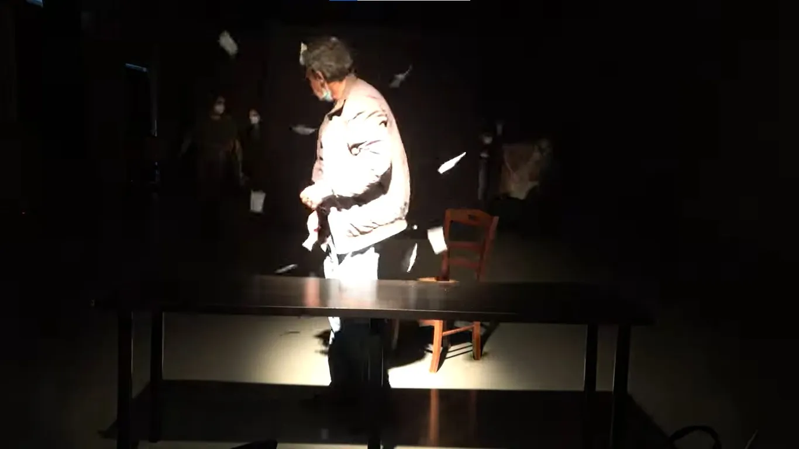
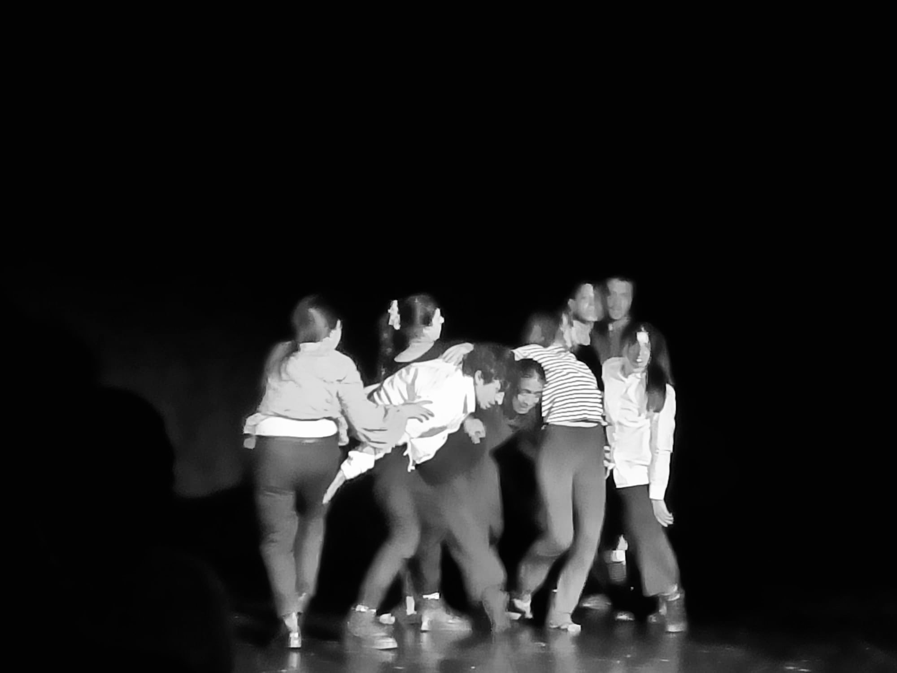
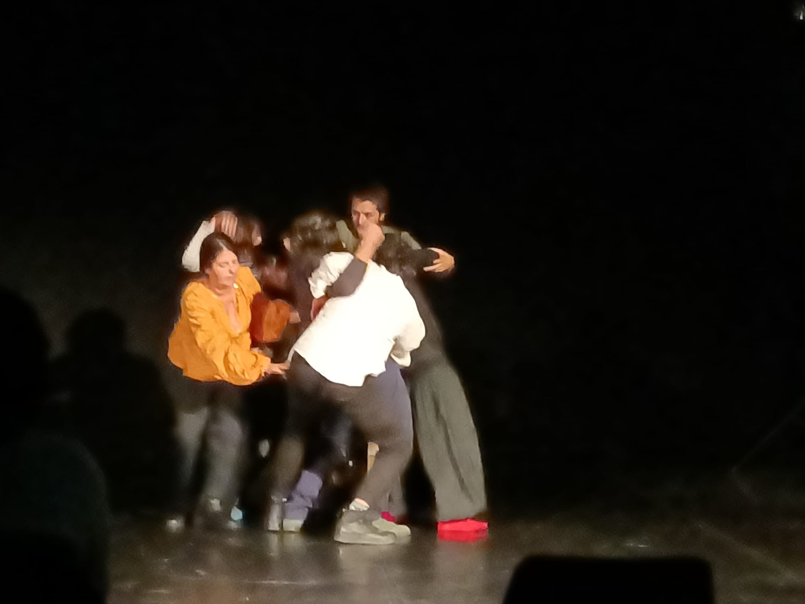

Sinossi
Darsi in scena è la ricerca che stiamo conducendo attualmente. Il lavoro che presentiamo è un momento dello studio che stiamo svolgendo e apre alla visione collettiva di un frammento del nostro laboratorio. Abbiamo pensato di invitare periodicamente a una giornata di lavoro un ospite, scelto tra le persone che ci conoscono e con le quali abbiamo già avuto significativi incontri di lavoro. Gli abbiamo chiesto di seguire in presenza, nella nostra sala studio, una fase del lavoro e di restituire, a noi in sala e a quanti ci avranno seguito in collegamento, un commento in modi e in forme condivise.In questo primo incontro interverrà l’artista Mario Mei. L’evento risponde a un carattere costitutivo dei nontantoprecisi: costruire opportunità di riflessione collettiva sul Teatro e l’Arte. Lo studio si interroga sulla natura della scena e sul corpo dell’attore che la incarna. Ci chiediamo cosa è in atto quando l’attore si dà all’azione, quale lavoro fisico si dà a vedere nel manifestarsi della scena, quale presenza abita il gesto dandolo in visione, cosa vibra nella parola capace di muovere all’ascolto. L’emergere della forza collettiva, che può arginare la violenza della ragione, può aprire alla poesia qualsiasi parola, qualsiasi gesto alla libertà, può dare scena lì dove altrimenti sarebbe solo vuoto. Lo spazio che abitiamo in questo lavoro è quello che si apre alla nostra lettura del testo di Raymond Queneau “Piccola cosmogonia portatile”: certamente un Poema complesso che frequentiamo attraversando le lettere delle sue parole, le righe dei suoi versi come se fossero in alcuni momenti figure da sfogliare, in altri strani strumenti di cui produrre suoni e vibrazioni, in altri momenti ancora ignoti talismani di cui apprendere i benefici poteri. Una lettura dinamica, un’azione volta alla necessità del movimento imprevedibile, un lavoro fisico che tolga spazio alla lettera e dia scena alla voce. Rintracciare i segni di una fatica comune orienta il nostro incontro con il testo, che ci appare come un corpo a corpo tra autore e scrittura. L’appuntamento al quale chiamiamo è il primo di tre tappe che guideranno la costruzione di uno spettacolo che ci auguriamo possa riportarci presto al nostro pubblico in fisica vicinanza.
L’arte di Mario Mei parte dal segno, come forza stratificante nella “materia” del ricordo. La “rimembranza” generata da associazioni visive, costruisce episodi formali, senza un ordine preciso e senza una ragione, il significato non verifica il senso.





Crediti foto: XXXX
← Torna a SPETTACOLI